Equateur : E... comme Icare
Bonjour à tous
Nous aurons passé une dizaine de jours en Equateur, et c'est durant ces jours que nous aurons vécu l'émotion la plus forte de notre voyage jusqu'à présent ! Avec Antoine, nous nous sommes lancés dans la nuit du 20 au 21 janvier à la conquête du Chimborazo, un volcan équatorien endormi qui culmine à 6268m d'altitude. De par sa position géographique, son sommet constitue le point terrestre le plus proche du soleil ! Rêve éternel que celui de vouloir toucher le soleil, mais réviser notre mythologie aurait pu nous éviter une terrible déconvenue... Tels des Icare des temps modernes notre ambition nous aura joué des tours et à vouloir toucher le soleil, nous nous sommes brûlés les ailes !
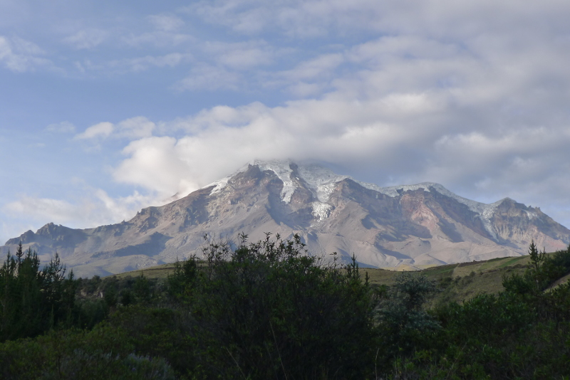
Vue sur le Chimborazo, son sommet est le point terrestre le plus proche du soleil
Mais avant de revenir en détail sur cet épisode reprenons où nous vous avions laissé. C'est par la capitale, Quito, que nous commençons notre exploration du pays. On reste 3 jours dans la ville et on est tout de suite séduit par son charme. Propre, ensoleillée, animée, avec de belles places et de belles églises... Quito est une ville qui vaut le détour ! Par hasard, Antoine y retrouve même Charlotte, une amie de prépa qui loge dans la même auberge que nous! Cela nous fait un peu de compagnie fort bien venue pour visiter la ville. Nous concluons notre visite de Quito par un tour au téléphérique (encore un) qui nous amène à 4100m et d'où nous bénéficions d'une superbe vue sur la ville, qui est bien plus grande qu'elle n'en a l'air !
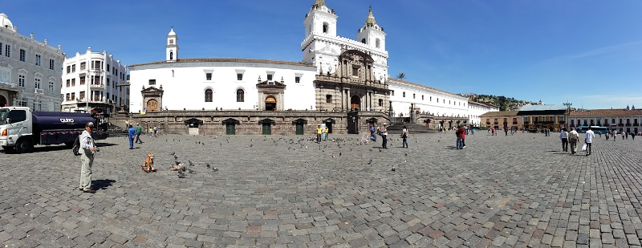
Quito, une très belle ville qui nous enchante
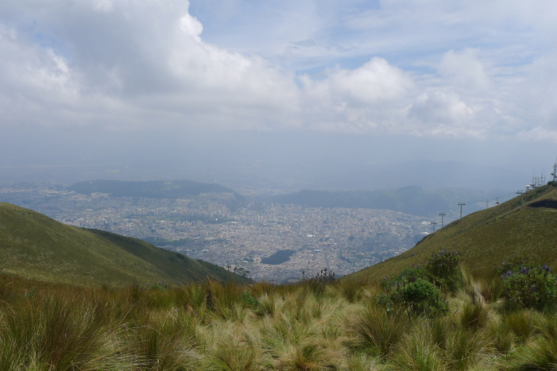
Du haut du téléphérique on dispose d'une belle vue sur Quito, une immense ville qui s'étend au milieu des Andes
Après Quito, nous avions prévu d'aller nous balader au Cotopaxi, un autre volcan équatorien très beau et très touristique. Manque de chance, celui-ci est entré en éruption en août dernier après plus de 130 ans d'inactivité, et le volcan ainsi que son parc sont fermés aux touristes. Plan B donc, nous avisons le Chimborazo. On se dit que monter à plus de 6000m ça pourrait être sympa et que se trouver au point le plus proche du soleil ça pourrait être marrant. Sympa et marrant... on y reviendra :)
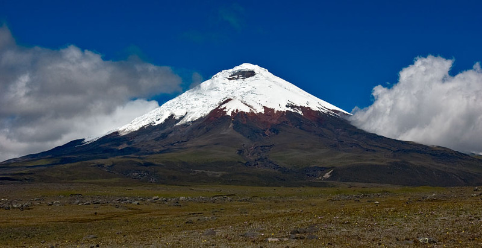
Le Cotopaxi, un volcan équatorien très touristique... qui est entré en éruption en août dernier!
Nous quittons Quito un peu tôt et direction donc Riobamba, la ville qui se situe au pied du Chimborazo, où nous rencontrons John Paredes, un canado-équatorien qui tient une agence de voyage sur place. Nous passons par John pour préparer notre ascension. Celui-ci nous met immédiatement en garde, seuls 25% de ceux qui tentent l'ascension la réussissent... et ce pour une raison très simple, les grimpeurs sous estiment trop souvent les dégâts causés par le mal des montagnes. Et pour cause, pensez qu'au sommet du Chimborazo, vous disposez d'à peine 28% du niveau d'oxygène que vous avez au niveau de la mer. Tout effort devient extrêmement difficile à cette altitude et il n'existe qu'une seule parade : l'acclimatation ! Comme nous le dit John cela n'a rien à voir avec votre condition physique, vous aurez beau être l'homme le plus fort du monde, si on vous empêche de respirer... et bien vous mourrez.
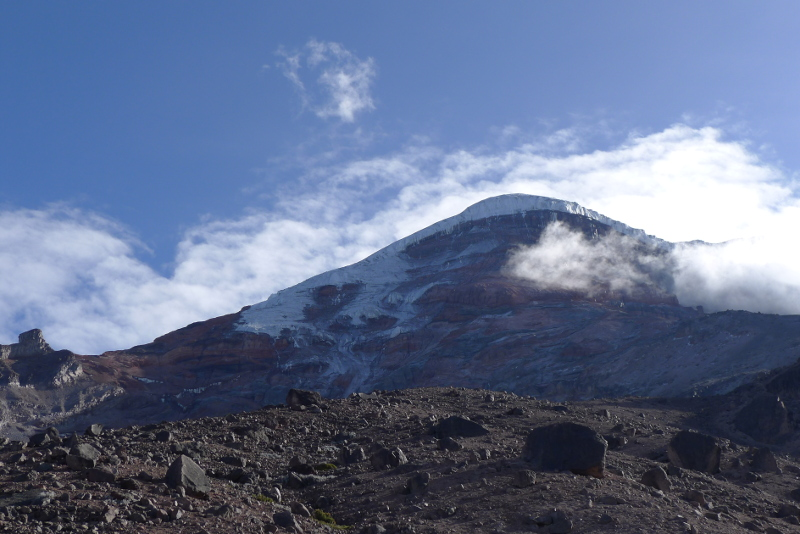
Le sommet du Chimborazo au petit matin
Pour ma part je suis bien au fait du danger du mal des montagnes. Je l'avais déjà subi lors d'une expédition au Népal il y a deux ans. A l'époque le point le plus haut que nous devions franchir était un col à 5300m et nous n'avions pas pris le temps d'acclimatation conseillé. Arrivé au refuge à 4700m j'avais eu le droit à la totale tournis, maux de tête, nausées... Avec mes compagnons de l'époque Alex, Sosthène et Vincent nous avions été à deux doigts d'appeler un hélicoptère de rapatriement d'urgence ! Finalement je m'étais remis sur pied miraculeusement vite et nous avions pu franchir le col sans trop de problèmes. Mais bref, pas question de commettre la même erreur cette fois-ci !
Avec John nous prévoyons 3 jours d'acclimatation au refuge à 4800m, ultime étape avant l'acension. C'est deux jours de plus que ce qui se fait traditionnellement. John nous emmène au refuge et pendant 3 jours nous multiplions les marches dans les environs pour nous habituer à produire un effort en altitude. On enchaîne également les thés de coca, sensés être un bon remède préventif au mal des montagnes. Cela ne nous empêche pas de passer une mauvaise première nuit et une très mauvaise deuxième journée. Une nouvelle fois je subis les symptômes maux de tête, nausées, etc. Antoine n'est pas en meilleur état que moi. A un moment je me demande vraiment si je vais pouvoir tenter l'ascension. Heureusement, à l'aube du 3e jour nous ne sentons plus cette migraine permanente qui nous accompagnait depuis le début. On sent que l'acclimatation fait effet.
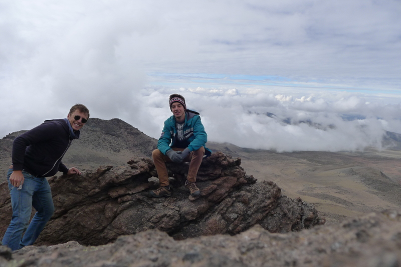
On profite de notre acclimatation pour faire de belles balades à 5000m d'altitude, dans le parc du Chimborazo
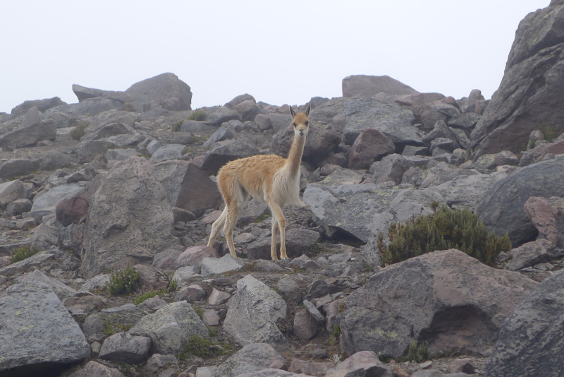
On y croise des "vicuñas" (vigognes en français), un cousin des alpagas, qui sont très nombreux dans le parc
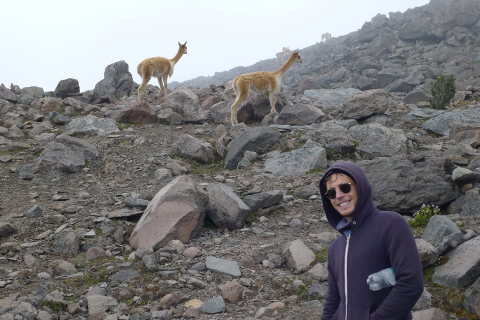
Les vigognes sont sauvages mais peu farouches
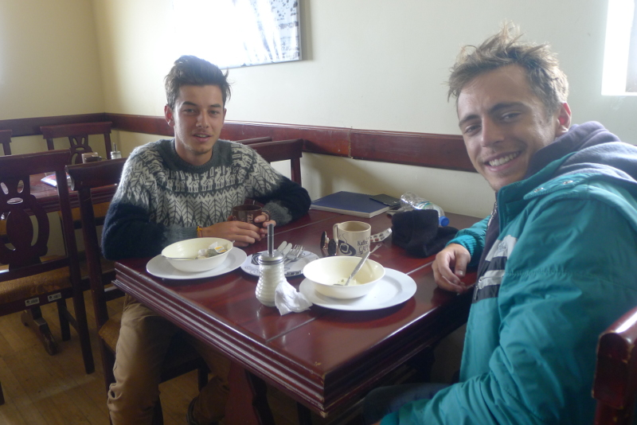
Durant nos temps de pause au refuge, on enchaîne les thés de coca pour combattre les migraines
En général dans ce genre d'ascension, le départ est assez matinal de façon à être au sommet tôt le matin, quand la neige est encore dure et le ciel dégagé. Mais dans le cas du Chimborazo, le refuge le plus proche du sommet est exceptionnellement loin (4800m pour un sommet à 6300m) et le départ est donc exceptionnellement tôt. Ou tard plus précisément. On se "réveille" à 22h00 et le temps de s'équiper nous voilà en route à 23h00. Notre guide Alberto nous annonce qu'il faut prévoir environ 8 heures d'ascension, et 4 heures pour redescendre... 12 heures d'effort devant nous !
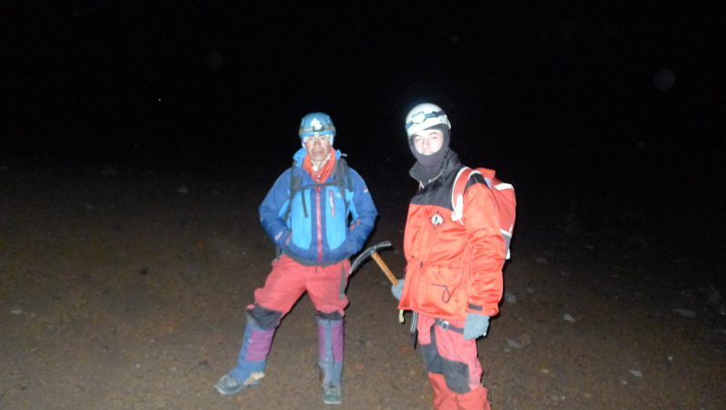
Départ à 23h00 en compagnie d'Alberto notre guide, équipés des pieds à a tête
Les deux premières heures d'ascension sont plutôt tranquilles, il suffit simplement de grimper en suivant un chemin tracé. Toutefois le dénivelé est fort et cela suffit à saper notre énergie. C'est à 1h00 du matin que les premières difficultés apparaissent. Le chemin disparaît et il s'agit de traverser un flanc de montagne caillouteux et abrupt. Les cailloux glissent et le sol se dérobe sans cesse sous nos pas. Alberto nous montre comment utiliser notre piolet, en cas de chute c'est l'unique chose qui permettra de nous retenir. Il faut être concentré à 100% à chaque pas. Après une heure d'ascension dans ce décor nous arrivons enfin au pied du glacier. Sur le groupe d'une douzaine de personnes parties en même temps que nous, nous voyons déjà l'abandon d'un solide gaillard barbu...
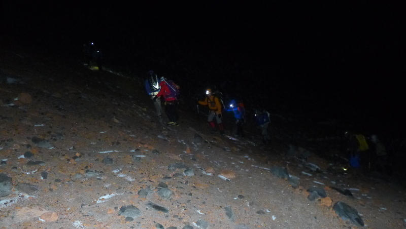
Marche de nuit, à flanc de montagne, avec le sol qui se dérobe sans cesse sous nos pieds
Si je pensais que le plus dur était derrière nous je me trompais largement. Nous sommes ce moment à environ 5300m et pour l'ascension du glacier nous devons chausser nos crampons et nous encorder. Nous sommes donc encordés Alberto, Antoine et moi et nous nous lançons à l'assaut du glacier. En tant que plus léger du groupe je ferme la marche. J'avoue que je ne suis pas du tout rassuré. Sur les premiers pas je dérape un peu et je comprends l'utilité de la corde. Je comprends également qu'en cas de faux pas je dépends entièrement d'Antoine et d'Alberto et inversement. J'essaye de ne pas trop y penser et je me concentre sur les pieds d'Antoine devant moi. Surtout ne pas regarder ni au dessus, ni en dessous. Il est environ 2h00 du matin, il fait nuit noire et la pente est abrupte. Comme si le simple fait de monter ne suffisait pas, il faut faire attention à chaque pas à ne pas glisser et en plus de cela le vent s'est levé et l'air est glacial. S'en suivent les deux heures d'effort les plus dures de ma vie. Chaque pas est une souffrance. Mais j'ai aussi peu envie de continuer à monter que de tout redescendre! Alors je m'accroche. Un moment vers 4h00 du matin je demande à Alberto où nous en sommes. Celui-ci me répond qu'on est entre 5700 et 5800m et que ce qui nous attend est encore pire. 5800m seulement! Cela veut dire qu'on n'a fait que la moitié du glacier et je n'ai plus de forces. A ce moment je comprends qu'il faut qu'on fasse demi-tour. Surtout qu'Alberto m'annonce qu'il faut autant de forces pour monter que pour redescendre. Je regarde Antoine et je lui dis qu'il faut qu'on arrête. Il n'insiste pas pour continuer, il semble tout aussi épuisé que moi... Tant pis pour le Chimborazo, continuer serait vraiment trop dangereux !
Pas de photos de notre ascension du glacier, il faisait trop froid pour sortir l'appareil photo et nous étions trop concentrés sur notre effort
Une fois cette décision prise nous ne sommes pas tirés d'affaire pour autant. Il faut redescendre et Alberto a raison lorsqu'il dit que cela nécessite autant de forces que de monter. A chaque pas on menace de déraper et de provoquer une mini avalanche! La corde se révèle utile plus d'une fois pour rattraper Antoine. Nous mettons trois heures à tout redescendre, trois heures où je dois aller piocher au plus profond de mes réserves. Lorsque nous arrivons enfin au refuge, je m'écroule littéralement d'épuisement sur le premier lit que je vois, peu importe si ce n'est pas le mien.
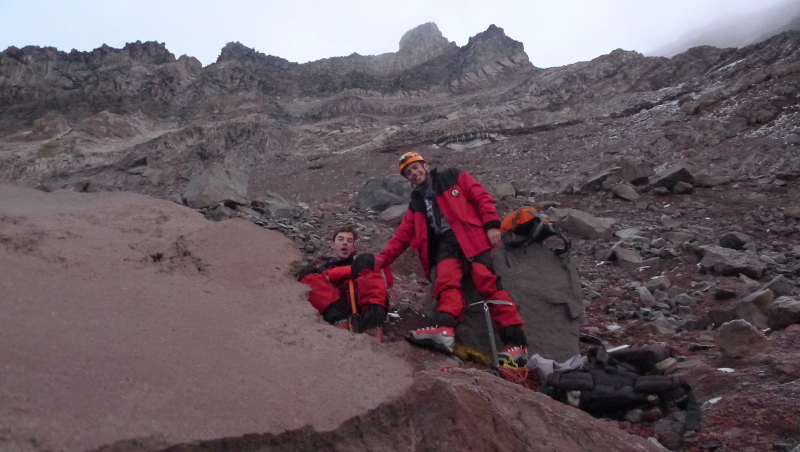
A 7 heures du matin, nous revoilà au point de départ, à bout de force
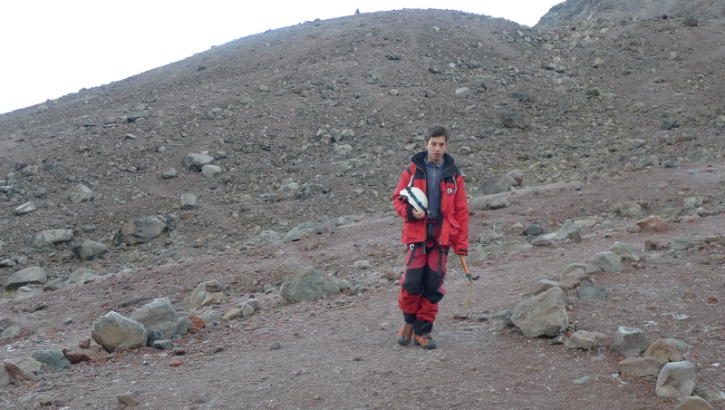
Epuisé, je tire la tête des mauvais jours
Même si nous n'aurons pas réussi à atteindre l'objectif que l'on s'était fixé, on est fier de ce qu'on a fait. On a tout donné et on est allé au bout de nous mêmes. On a renoncé lorsque vraiment on sentait que ça devenait trop dangereux. Autre petite satisfaction notre programme d'acclimatation a fonctionné et finalement ce n'est pas le mal des montagnes qui nous aura eu. C'est simplement l'effort physique qui était trop important pour nous. A l'avenir on le saura, pour escalader un sommet à 6300m il faut de l'entraînement :) Enfin surtout cette ascension aura été pour tous les deux une belle leçon d'humilité. Symboliquement c'est très fort d'avoir voulu s'approcher au maximum du soleil et d'avoir échoué. L'ambition c'est bien, mais dans la vie il faut aussi savoir garder les pieds sur terre et reconnaître lorsqu'une chose est hors de notre portée.
Après cette aventure nous retournons à Riobamba où nous prenons une journée entière pour nous reposer. Nous reprenons ensuite notre route vers le Sud et nous faisons étape à Cuenca, troisième ville du pays et dont le centre historique est inscrit au patrimoine mondial de l'Unesco.
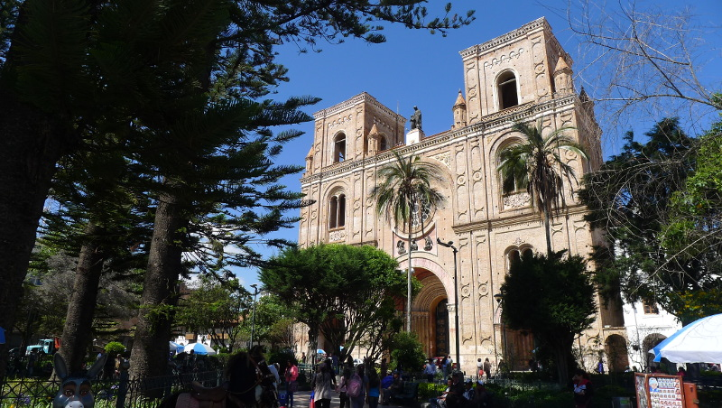
Cuenca, une autre jolie ville équatorienne au Sud du pays
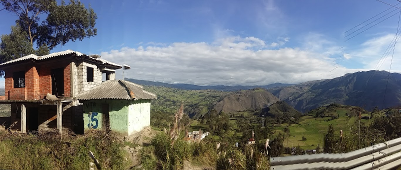
Sur les trajets en bus on profite de beaux paysages sur les Andes
De Cuenca nous prenons un bus pour rejoindre Chiclayo... au Pérou! Nouveau pays et nouvelles aventures pour Aquamerica. Pas de repos, dès lundi nous rejoignons Santa Roque de Cumbaza, un petit village au coeur de la forêt amazonienne péruvienne, au Nord de Tarapoto où nous avons prévu de nous arrêter travailler deux semaines. Un peu comme ce que nous avions fait dans le Montana, nous serons logés et nourris en échange nous aiderons à nettoyer le fleuve Cumbaza, l'un des affluents de l'Amazone. On vous racontera tout ça en détails prochainement ;)
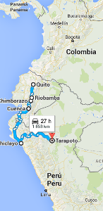
Notre itinéraire des derniers jours, toujours effectué en bus
Comme d'habitude on se quitte avec un jeu concours. Pour un bon grimpeur il faut environ une dizaine d'heure pour grimper et redescendre le Chimborazo depuis le refuge à 4800m. Mais c'est un japonais qui détient le record de l'ascension/redescente la plus rapide... à votre avis combien de temps a-t-il mis?
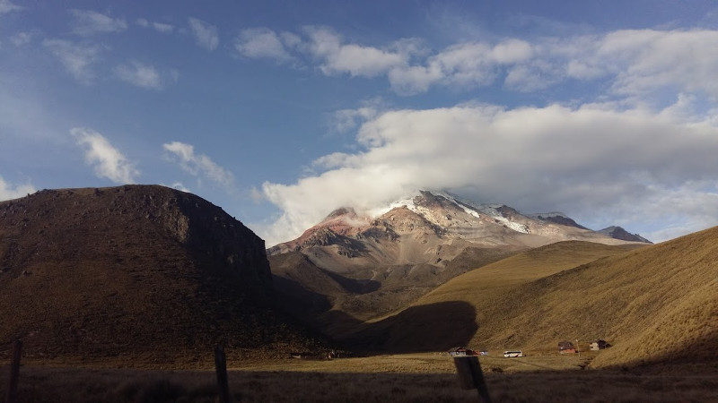
Quel est le record de la montée/redescente la plus rapide du Chimborazo en partant du refuge situé à 4800m?
Envoyez vos suggestions à contact@aquamerica.fr et comme d'habitude le gagnant aura droit à une dédicace sur notre page Facebook!
A très vite !